- Overview
- Output Document Management
- Creating Output Documents
- Creating Output Documents Using TCPDF Generator
- Editing Templates
- Editing the HTML Code
- Inserting Images
- Inserting form fields
- Inserting Variables inside Form Fields
- Inserting Page Breaks
- Page Headers and Footers (HTML2PDF Library)
- Page Numbers and File Information (HTML2PDF Library)
- Formatting documents to display content in RTL
- Grids in Output Documents
- Errors with Output Documents
- Error while generating PDF Documents
- Variables are not inserted
- Output Document is empty
- Error in html2pdf
- Using Non US-ASCII Characters in Output Documents
- Output Documents in Multiple Languages
- Inserting Output Documents into a Process
- Output Documents Example
- Output Document Storage
- Accessing Output Document with Triggers
Overview
Output Documents are files generated while running a case, which are meant to be printed out or stored digitally outside ProcessMaker. Output Documents are useful for creating external records of case data, as well as creating formatted documents such as letters, bills and receipts. Output Documents are generated from HTML templates and can contain variables, which are auto-inserted when the Output Document is generated as a step when running a case. Output Documents are generated as PDF (Portable Document Format) and/or DOC (Word document) files, so they can be easily opened and printed using Adobe Acrobat and Microsoft Office (or alternatives such as Foxit Reader, Evince, Okular, WordPerfect, AbiWord and OpenOffice).
If the Output Document is generated as a PDF file, either the HTML2PDF (an old version of a PDF generator which is no longer recommended) or the TCPDF library can be used to generate the PDF file. HTML2PDF can be used to insert some of the formatting options listed below, such as page breaks and headers and footers. In most cases, it is recommended to use the TCPDF library, which is compatible with more recent versions of PHP. TCPDF is recommended if generated PDFs contain images or it is necesary to minimize the size of the file, n the other hand HTML2PDF generates compressed PDF documents, which omit extra parameters in the code, which means that the PDF file will be smaller in size.
Output Document Management
It is possible to see the list of Output Documents created in the project. Click on the Output Documents option inside the Main Toolbox:
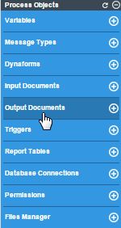
All the Output Documents will be listed:
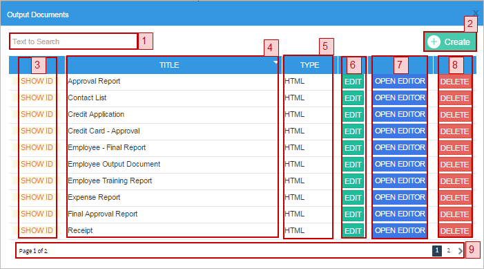
Where:
Search Field: Enter the title of an output document in this field. As the text is entered all coincidences will be filtered in the list below.
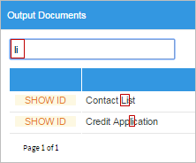
Create: Opens a window to create a new output document. It is possible to use either this option to create an output document or this option.
Show ID: Obtains the unique identification code of the output document. For instance, use this ID to create an output document using the PMFGenerateOutputDocument function.
Title: Shows the title of the output document created in the project. The list is sorted in ascending order by default, but it is possible to view the list of documents in descending order by clicking on the down triangle next to "Title".
Type:Shows the type of document, which always is HTML.
Edit: Opens a window to edit the corresponding output document.
Open Editor: Opens the WYSIWYG HTML editor to edit the document template:

Read this documentation to learn how to use the HTML editor.
Delete: Click this option to delete the output document. The following confirmation message will be shown:
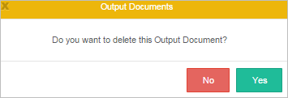
Select Yes to delete the output document and the flash message "Output document deleted successfully" will be shown in the upper part of the designer.
Pagination Control: When there are more than 10 documents created in the project, a new page is added to this window. To navigate through these pages use the > or < options. To view a specific page, click on the number of the page in the control.
Creating Output Documents
To create a new Output Document, open a project and go to the right side of the screen where the Main Toolbox is located. Hover the pointer of the mouse over the +icon and the Create option will be displayed to the left:
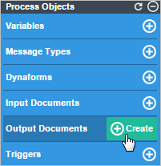
Click on the Create option and the following window will be displayed:

Where:
- Title: Adds a title that identifies the output document.
- Filename generated: The filename to be generated when an output document is created when running cases. Note that paths cannot be included in the filename, since output documents are stored in a standard location in the file system. To include a system or case variable in the filename, click on the [@@] button and select a variable.
Note: It is recommended to only use
@#variablein filenames and not@@variablebecause the Windows operating system can't handle filenames that contain"(double quotation marks). - Description: A small description about the document, which should inform the user about the general content or purpose of the document.
- Report Generator: Choose the engine that will generate the output documents. Use HTML2PDF with ProcessMaker versions earlier than 2.5, otherwise use TCPDF with versions 3.0 or above.
- Media: Select the paper size:
Paper Type Width (mm) Height (mm) Letter 216 279 Legal 216 357 Executive 184 267 B5 182 257 Folio 216 330 A0Oversize 882 1247 A0 841 1189 A1 594 841 A2 420 594 A3 297 420 A4 210 297 A5 148 210 A6 105 148 A7 74 105 A8 52 74 A9 37 52 A10 26 37 Screenshot640 640 480 Screenshot800 800 600 Screenshot1024 1024 768 - Left: Size of the paper's left margin in mm.
- Right: Size of the paper's right margin in mm.
- Top: Size of the paper's top margin in mm.
- Bottom: Size of the paper's bottom margin in mm.
- Output Document to Generate: Select whether the output document will be generated in DOC, PDF, or BOTH formats.
- PDF Security: An option that allows passwords to be set for the generated PDF document and
restricts how it may be used. Select one of the following options:
- Disabled: Default. No security will be applied to the generated PDF document.
- Enabled: If selected, the following security options are displayed:
- Open Password: Define a password to open the PDF document.
- Owner Password: Define a password to change the PDF document's permissions.
- Allowed Permissions: Select how the PDF document may be used. To select more
than one option, hold down on the CTRL key while clicking the following options:
- Print: The document can be printed.
- Modify: The document can be edited.
- Copy: The document can be copied.
- Forms: The fields in the document may be filled in.
- Enable Versioning: Presents a dropdown with two options, which are "Yes" and "No". If "Yes" is chosen, then ProcessMaker will keep multiple versions of the output document. Versioning is useful if the same output document is created at multiple steps in a case. This option allows a record to be kept of how the document's data changes over the course of a case, which is useful for maintaining audit trails.
- Destination Path: Enter the name of the folder where the output document should be stored.
Click on the [@@] button to select a variable to use in the folder name. To specify a
subfolder inside other folders, enter a path to that folder, separating each folder with a / (forward slash).
For example: Invoices/@#USR_USERNAME/@#subject_@#date
To see a list of input documents, output documents and attached files found in each folder, go to HOME > Documents and click on the folder.
Note: The Destination Path is a virtual path and it does not effect where output documents are stored in the file system. All case files will be stored inside the path where ProcessMaker has been installed. - Tags: Enter the name of the identifying tag(s) that will be associated with this output document. To specify more than one tag name, separate each tag name with commas. Click on the [@@] button to select a variable to use in the tag name. Tags are really useful when looking for output documents in the ProcessMaker database.
- By clicking on the generated file link: Select whether the file will be downloaded or opened
in the browser window.
- Download the file: Download the file directly to the local computer. By choosing this option, the browser will automatically download the file. This is the recommended option when creating output documents.
- Open the file: Open the file in the browser window.
Note: If selecting this option when configuring an output document, take into consideration that the browser must be configured differently to open the files downloaded. To be able to open .pdf files, install Adobe Acrobat Reader. It is recommended to use the Download the file option to avoid the extra configuration that opening the file in the browser window requires.
Creating Output Documents Using TCPDF Generator
Usually when PDF Documents are generated with more than 6 pages, they can't be created and downloaded producing an error in the HTML code. To improve the generation of PDF documents, the TCPDF generator was included inside ProcessMaker to allow users the creation and generation of PDF and DOC documents without having issues with the amount of pages created.
This generator supports UTF-8 Unicode and right-to-left languages. It also has backward compatibility with documents created in previous versions of ProcessMaker. If documents less than 6 pages need to be created, it is also possible to use the HTML2PDF generator. Moreover using HTML2PDF generates compressed documents without configuring extra parameters into the code, which means that the PDF document generated will be smaller in size. This is a great enhancement, especially if documents with images in them need to be generated.
When an output document is being created, the new generator can be chosen using the option seen in the image below:
Editing Templates
To edit the template of an output document, go to the Main Toolbox and click on Output Documents. A list of all the templates created for the process will appear there. Select the output document that needs to have its content edited and click on the Open Editor button. A new window will open where the document can be changed and corrected in any way that the user wants. There is also a small HTML button that the user can click to access the HTML code and format the document. Once the document is formatted, click on the Save button and a quick message will appear telling the user that all changes made were saved.


Enter the desired text into the Output Document template. Entering a hard return generates a new paragraph in the HTML, which inserts an extra blank line in the text. To enter a line break that doesn't insert a blank line in the text, press SHIFT + ENTER. The editor supports the standard key combinations of CTRL + C to copy, CTRL + X to cut, and CTRL + V to paste. Changes can be undone by pressing CTRL + Z. Multiple levels of undo are supported. After undoing changes with CTRL + Z, press CTRL + Y to redo the changes. When done editing the Output Document template, click Save to store the changes and then click on the close icon to close the editing window.
Inserting Variables
Case variables and system variables can be inserted into the text of an output document:
@#VARIABLE-NAMEinserts the value of the variable without any changes.@@VARIABLE-NAMEinserts the value of the variable enclosed in "" (double quotation marks). Any quotation marks inside the value can be escaped with backslashes, such as"Don\'t say \"hello\"".
If a variable is associated with a dropdown box, checkbox, checkgroup, radio group, suggest box, datetime or file control in a Dynaform, then there will be an additional variable named @#VARIABLE-NAME_label, which is created when the Dynaform is submitted. This variable holds the label of the selected option, which is displayed to the user, whereas @#VARIABLE-NAME holds the key of the selected option.
For example, a variable named "selectService" that is associated with a dropdown box might have a value of "accounting" in its @#selectService variable, but "Accounting and Tax Filing Service" in its @#selectService_label variable. For more information, see Inserting Variables.
Variables can be inserted in the Output Documents editing window.
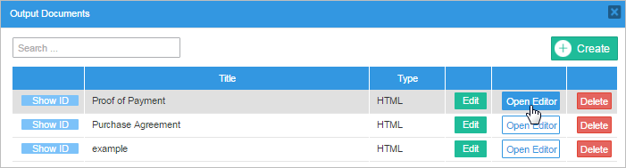
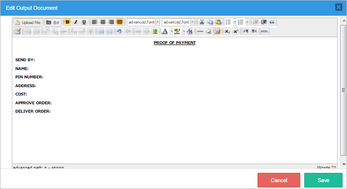
Now for the variables, next to the Bold property there is a variable picker. Click on it to choose variables to relate to the empty fields created. Select the variables with @# signs to add variables to the document with no changes. For example, Name will have the @#USR_USERNAME variable. Continue to add variables to the other fields, and then click on Save to store all changes made in the document.

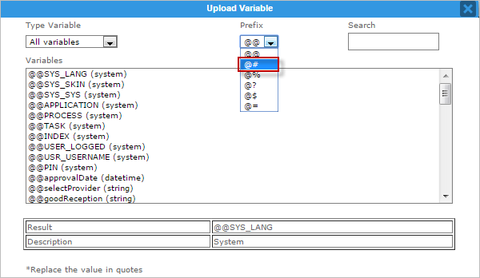
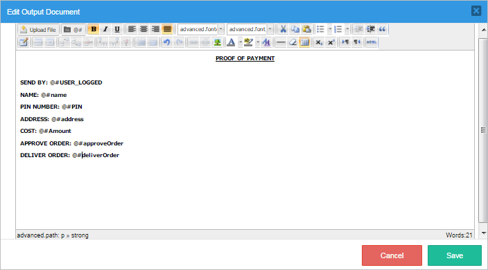
Line Breaks in Textareas
A textarea control allows more than one line of text to be input into a field. The information in this control is stored in one single line with \n as the representation for each line break, therefore, whenever using the Textarea's variable, the information will be displayed all together on the same line.
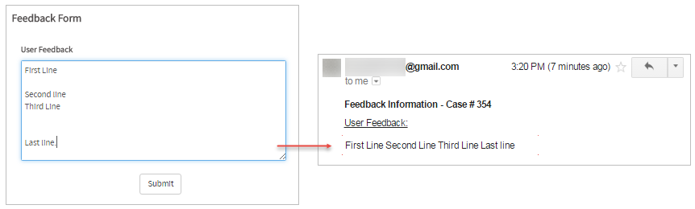
To preserve line breaks when showing the textarea information in messages, emails, etc. it is recommended to use the nl2br PHP function within a trigger.
For example, create the following trigger and place it after the Dynaform.
Remember that to insert the value of a variable without any changes, the prefix @# must be used before the name of the variable. In this case the textarea variable will be @#textareaVar, as explained in the Inserting Variables section.
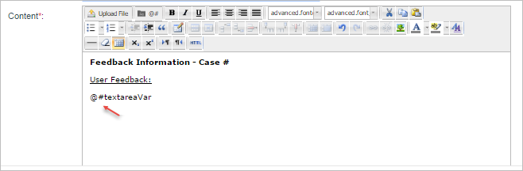
The function will insert HTML line breaks before all new lines. Therefore, the e-mail will display the variable's information preserving the line breaks typed in the textarea.

Formatting Output Documents
ProcessMaker includes a new advanced editor for documents as seen in the image below:
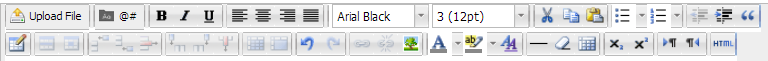
This toolbar provides several options to clean up the document. To add formatting to output documents, the toolbar includes the following buttons:
Upload File: Click on this button to upload a file with an .html or .htm extension.
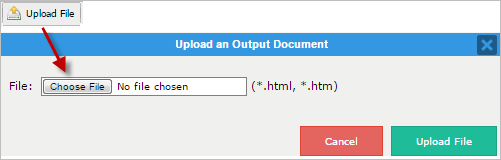
Variable Picker: Choose the type and prefix of the variable to be called in the document.

 Bold: Bold the selected
text (a heavier weight). Shortcut: ctl + b
Bold: Bold the selected
text (a heavier weight). Shortcut: ctl + b Italics: Italicize
the selected text (inclined text). Shortcut: ctl + i
Italics: Italicize
the selected text (inclined text). Shortcut: ctl + i Underline:
Underline the selected text. Shortcut: ctl + u
Underline:
Underline the selected text. Shortcut: ctl + u Left align: Align the
selected text along the left-hand border.
Left align: Align the
selected text along the left-hand border. Center: Align the
selected text in the center.
Center: Align the
selected text in the center. Right align:
Align the selected text along the right-hand border.
Right align:
Align the selected text along the right-hand border.- 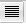 Text Align: Justify the entire selected text.
- 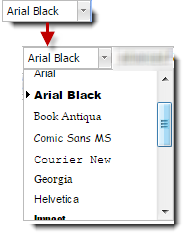Font: Allows the user to choose one of many different fonts to customize the document.
- 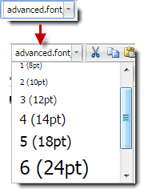Font Size: Increases or decreases the font size of the selected text.
- Cut, Copy and Paste: Cut will remove the selected text from its position, while Copy creates a duplicate. Paste copies text and inserts it into the document.
 Ordered List:
Insert an ordered list, which begins counting from 1.
Ordered List:
Insert an ordered list, which begins counting from 1. Un-ordered List:
Insert an unordered list, which uses bullet points instead of numbers.
Un-ordered List:
Insert an unordered list, which uses bullet points instead of numbers. Outdent, Indent, Quote: Outdent and Indent will add a space to a selected text; outdent
will move the text toward the left marging and indent will move the text away from the left marging. Quote
works by selecting a text and aligning the text inside of quotation marks.
Outdent, Indent, Quote: Outdent and Indent will add a space to a selected text; outdent
will move the text toward the left marging and indent will move the text away from the left marging. Quote
works by selecting a text and aligning the text inside of quotation marks.- 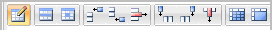 Table Configuration: Creates and edits a table of as many rows and columns as needed, can also insert more rows and columns or delete them. The columns in the table can be ordered, split or merged as needed.
 Undo and Redo: Recover or revoke previous actions made in the document.
Undo and Redo: Recover or revoke previous actions made in the document. Links Configuration: These tools insert and edit links, as well as convert links
to normal text. An image can also be inserted or edited.
Links Configuration: These tools insert and edit links, as well as convert links
to normal text. An image can also be inserted or edited.
Note: Take into account that the source of the images inserted must be from a URL with an
httporhttpsprotocol. It is not possible to upload an image from a local source using this editor. To upload an image from a local resource, first upload it as a Public File and access it using this information. Font Color:
Change the color of the selected text.
Font Color:
Change the color of the selected text. Text Highlight Color:
Change the highlight (background) color behind the selected text.
Text Highlight Color:
Change the highlight (background) color behind the selected text.- Edit CSS Style: Contains more options to make more detailed edits to the text.
- Lines: Adds lines to mark different sections of the document
- Clear Formatting: Removes any formatting from the selected text.
- Grid Visual Help: Enables or disables the visual help grid in a selected table.
- 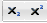 Subscript and Superscript: With a subscript or superscript a number, figure, symbol, or indicator can be added and it is set slightly below or above it.
- Direction: The direction can make the text align Right to Left or either Left to Right.
- HTML: Edit the HTML code for the template.
Avoid inserting HTML formatting tags inside a variable name, because it make the variable unable to be recognized by ProcessMaker. For example, if bold tags are inserted inside the variable @#USR_USERNAME, it becomes @#US<b>R_USER</b>NAME. Since ProcessMaker can't find find the variable @#US, it will print the variable name in the generated output document.
Editing the HTML Code
For more control over the formatting of a template and the use of more advanced types of HTML elements such as images or tables, the HTML code can be directly edited by clicking on the HTML button in the toolbar. When done editing the HTML code, click on the Update button to save it and see the result in the document.
Inserting Images
To insert an image into an output document, first upload the image file to the public directory in the ProcessMaker server with the Process File Manager (or another publicly accessible location). Take the ProcessMaker logo on the wiki page as an example. The URL would be the following "http://wiki.processmaker.com/sites/default/files/full-logo.png"
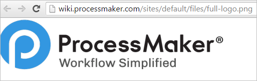
Now create an output document by hovering your cursor over the plus sign next to the Output Documents option in the Main Toolbox of the Process Map and clicking Create. The image below shows how the output document should be configured. Take into consideration that TCPDF needs to be selected in the Report Generator field to be able to see images. Click on the Save button to create the output document and add it to the Output Documents window.
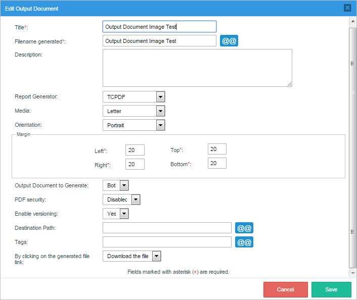
Once in the Output Documents window, click on the Open Editor button to open a Word-like editor.
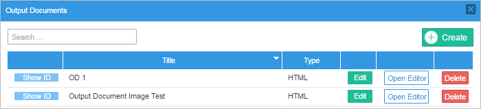
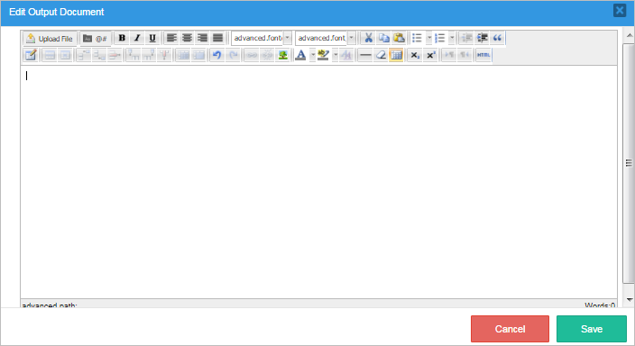
Then click on the HTML button to open the HTML Source Editor window.
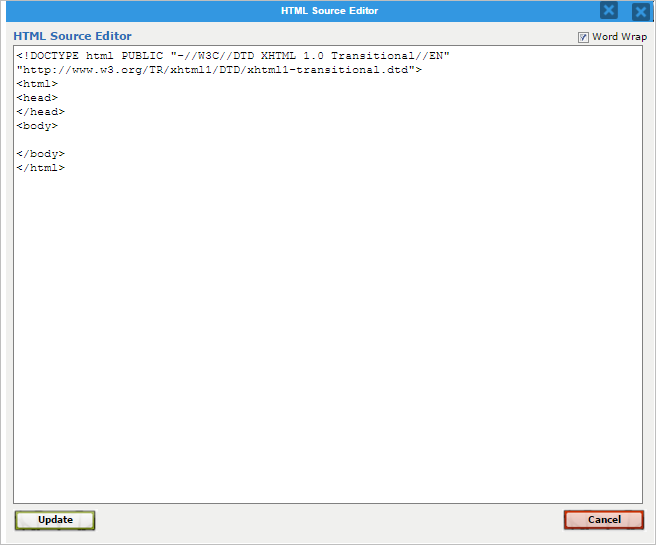
Now add the following code to insert an image:
Notice that the "src" or source of the image is the URL of the logo. After adding the code, click on the Update button to check if the image was properly uploaded. If the image is seen in the Edit Output Document window then it will be seen when running a case.

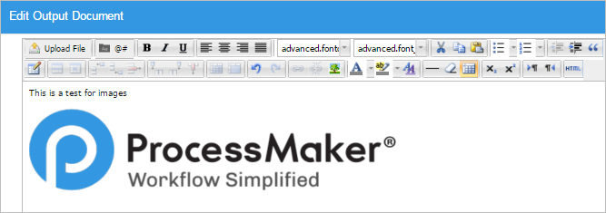
If there is an error then the following broken image will be shown in the editor. Check the code or image for any errors to be able to see it when running a case.

Inserting form fields
To insert form fields inside of an Output Document, edit the HTML code and create an HTML <form>. In that <form>, add <input>, <select>, and/or <submit> fields.
For example, this template code:
First Name: <input type="text" name="firstName" size="20" value="Jo Anne"><br>
Last Name: <input type="text" name="lastName" size="20" value="Summers"><br>
<input type="checkbox" name="contactClient" value="contact" checked>Contact Client<br>
<select name="howContact">
<option value="telephone">Telephone</option>
<option value="fax" selected>Fax</option>
<option value="email">Email</option>
</select><br>
</form>
When Updated the code will look like the image below, allowing the document to run with the user name and the name of the case started.:

Note that these form fields are not interactive, so the content of the fields can not be edited.
Inserting Variables inside Form Fields
System variables and case variables can be inserted inside form fields. For example, to insert the @#USR_USERNAME system variable in a field named "username" and the @#CaseStarted in a field named "timeStarted":
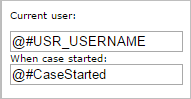
Warning: If inserting inside an <input> field, only reference variables as @#variable-name. Do NOT use @@variable-name, because it will insert a set of double quotation marks inside a set of double quotations marks, which will mess up the HTML tag.
For example, this bad template code:
will generate erroneous HTML code like:
Checkboxes in Output Documents
In an Output Document, a checkbox is marked if it has the checked property defined in its HTML code.
This checkbox is marked:

This one is not marked because there is no checked property:

In order to use a case variable to mark a checkbox in an Output Document, place the case variable in the HTML code like this:
If the value of @#markContactClient is "checked" then the checkbox will be marked. If it is "" (empty string), then it won't be marked in the Output Document.
Create a trigger which will set the value of @@markContactClient to "checked" or "", depending upon the value of a checkbox in a DynaForm. Set this trigger to fire before the step which generates the Output Document.
For example, if the variable associated with the checkbox control in the DynaForm is "contactClient", then use this PHP code to check whether the checkbox is marked in order to set the value of @@markContactClient.
Note: Checkboxes have a value of array(1) if marked or array(0) if unmarked. Checkboxes inside grids are not placed inside arrays, so they have a value of 1 if marked or 0 if unmarked.
Inserting Page Breaks
To insert a page break in both PDF and DOC files, first create the following trigger to define a HTML element that uses its style to force a page break:
This HTML code cannot be placed directly in the Output Document template, because the HTML Editor automatically strips out any style information, so this HTML code needs to be inserted with a case variable in the template.
Then, insert the @#pageBreak variable in the template file. For example:
Make sure to set the trigger that defines @#pageBreak to execute at some point before the Output Document step.
To insert a page break which will only appear in PDF files which are generated using the HTML2PDF library, edit the HTML code of the Output Document and add the HTML comment: <!--NewPage-->
For example, use the following code:
Output Documents do not have a property to add page headers and footer, but these can be added manually if using the HTML2PDF library to generate PDF files. To define a page header in an Output Document, edit the HTML code and add text between <!--header starts--> and <!--header ends--> tags. Note that these are custom comment tags used by HTML2PDF and these codes will be ignored in the DOC files and PDF files created with TCPDF.
For example:
To avoid the header being placed on top of content inside the Output Document, set the header above the content with a style setting such as top: -5mm;. However, make sure that the top margin of the Output Document is set to 5mm or larger.
To insert a page footer, edit the HTML code of the Output Document and add text between <!--footer starts--> and <!--footer ends--> tags. For example:
To avoid the footer being placed on top of content inside the Output Document, set the footer below the content with a style setting such as bottom: 5mm;. However, make sure that the bottom margin of the Output Document is set to 5mm or larger.
Note: The footer and header comments only work if using the HTML2PDF engine to generate the Output Document.
Page Numbers and File Information (HTML2PDF Library)
If generating PDF files using the HTML2PDF library, it is possible to insert page numbers and file information in the generated Output Document, using the following directives:
| Directive | Description |
|---|---|
| ##PAGE## | Number of the current page. |
| ##PAGES## | Total number of pages in the generated PDF file. |
| ##FILENAME## | The URL where the source HTML is located, such as: http://example.com/files/98534779755ef0116e951f8051419251/outdocs/83393260655ef0978d76fd0041065478_2.html. This location cannot be used externally. It either has to be converted into a URL such as: http://example.com/sysworkflow/en/neoclassic/cases/cases_ShowOutputDocument?a=83393260655ef0978d76fd0041065478&v=4&ext=html Or a file location of the server, such as: /opt/processmaker/shared/sites/workflow/files/985/347/797/55ef0116e951f8051419251/outdocs/83393260655ef0978d76fd0041065478_4.html |
| ##FILESIZE## | The size of the HTML source file in bytes. |
| ##TIMESTAMP## | The time when the Output Document was generated in "YYYY-MM-DD HH:MM" format. |
For example the following code prints out the page number and the total pages in the footer of each page:
<html>
<head>
</head>
<body>
<p></p>
<!--footer starts-->
<div style="position: fixed; bottom: 5mm; width: 100%;">
<center>Generated: ##TIMESTAMP##<br />Page ##PAGE## / ##PAGES##</center>
</div>
<!--footer ends-->
<p>This is the first page</p>
<!--NewPage-->
<p>This is the second page</p>
<!--NewPage-->
<p>This is the third page</p>
</body>
</html>
At the bottom of each page will appear, the footer text will appear:
Formatting documents to display content in RTL
The RTL skin is available in version 2.0.44 and later, which allows ProcessMaker to display correctly right-to-left languages such as Arabic and Hebrew. It is also possible to display the contents of Output Documents in right-to-left.
For content inside paragraphs, add dir="RTL" to the <p> tags:
For content inside tables, add dir="RTL" to the <table> tags:
For example the following Output Document template displays a table in right-to-left:
The resulting Output Document will be generated as:.doc document
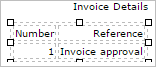
Grids in Output Documents
The fields of a grid can be inserted into an output document by editing the HTML code of the output document. To do this, use an opening tag with the name of the variable that is related to the grid, @>GRID-VARIABLE, enclosed inside HTML comment tags <!-- ... --> to open the grid.
Then, insert the fields into the grid using their IDs prefixed by @#. Finally, close the grid by using a closing tag with the name of the variable that is assigned to the grid enclosed inside HTML comment tags. Like this:
The fields enclosed in the opening and closing grid tags will be repeated as many times as there are rows in the grid. Remember that grid names and field names are CASE SENSITIVE, so they must be spelled exactly as they were defined.
Example: Expense Report
To design a travel expenses report, the following output document should list each of the expenses in a grid associated to a variable named "Expense_Variable_Grid". This grid contains four fields that have the IDs "Date", "Type", "Description", and "Amount".
<p align="center"><span>@#FIRST_NAME @#LAST_NAME</span></p>
<p align="left"></p>
<table border="1" cellspacing="0">
<tbody>
<tr><th>Date</th><th>Type</th><th>Description</th><th>Amount</th></tr>
<!--@>Expenses_Grid_Variable-->
<tr>
<td>@#Date_label</td>
<td>@#Type</td>
<td>@#Description</td>
<td>@#Amount</td>
</tr>
<!--@<Expenses_Grid_Variable--></tbody>
</table>
The code added in the HTML Source Editor window will look like the image below:
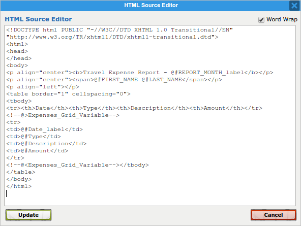
The HTML Editor will show a preview of the code inserted.
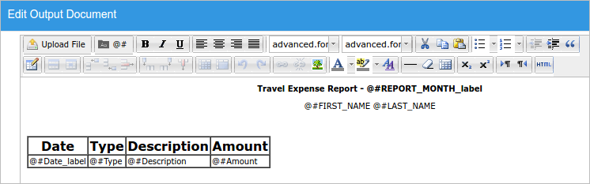
For example, for a case like the one shown in the image below:

The output document generated will look like the image below when opened in a .pdf format.

Note that the GRID-VARIABLE-NAME can also be generated by using the executeQuery() function to query a PM Table, Report Table or an external database. If the database has different field names than those in the output document, use "AS" to rename the fields. For example, a trigger containing the following code can be fired BEFORE the above Output Document is generated:
$query = 'SELECT EXP_DATE AS Date, EXP_TYPE AS Type, EXP_DESC AS Description, EXP_AMT AS Amount FROM EXPENSES';
@@EXPENSE_GRID = executeQuery($query, $db);
Likewise, the trigger can manually create EXPENSE_GRID as an associative array of associative arrays:
'1' => array('Date'=>'2017-04-25', 'Type'=>'Airfare', 'Description'=>'Flight to Paris', 'Amount'=>1295.35),
'2' => array('Date'=>'2017-04-26', 'Type'=>'Lodging', 'Description'=>'Sheraton Hotel', 'Amount'=>300.00 ),
'3' => array('Date'=>'2017-04-27', 'Type'=>'Meals', 'Description'=>'Lunch w/ client', 'Amount'=>104.95 )
);
The example used in this section can be downloaded by clicking here.
Normally, a cell takes up the space it needs to display its content. To avoid conflicts with the amount of information displayed in a cell, it is recommended to specify the width of each table cell.
<html>
<head>
</head>
<body>
<p align="center"><b>Title Report</b></p>
<table width="100%" border="1">
<!--@>GRID-VARIABLE-NAME-->
<tr>
<td width="25%">@#Field-1</td>
<td width="25%">@#Field-2</td>
<td width="25%">@#Field-3</td>
<td width="25%">@#Field-4</td>
</tr>
<!--@<GRID-VARIABLE-NAME-->
</table>
</body>
</html>
For example, if the width property is applied to the table of the previous example, the preview of this table will look like:
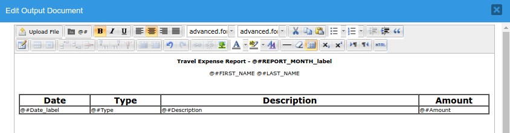
The output document will look like:
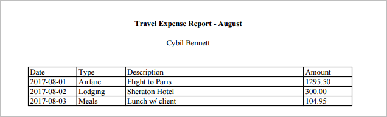
Grids with a Fixed-Width Font
The default font for Output Documents is Arial, which is a variable-width font. It is hard to create neat columns of data with a variable-width font. Therefore, it is recommended to edit the HTML code and set the grid fields inside <pre>...</pre> tags or <tt>...</tt> tags, so the columns of data will line up in a fixed-width font.
For example:
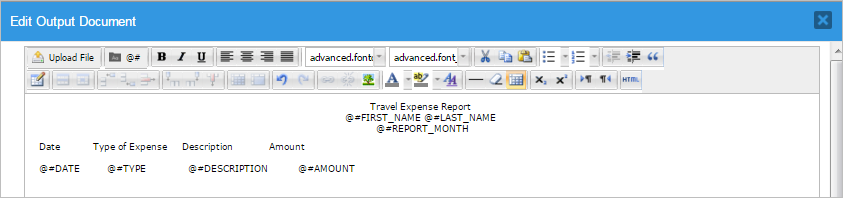
Grids inside an HTML Table
For even better formatting of grid data, edit the HTML code and set the the grid inside an HTML table.
Here is an example of the same grid fields inside an HTML table:
In version 2.5.0 and later:
Travel Expense Report<br>
@#FIRST_NAME @#LAST_NAME<br>
@#REPORT_MONTH
</center>
<br>
<table><tbody>
<tr>
<th>Date</th><th>Type Of expense</th><th>Description</th><th>Amount</th>
</tr>
<!--@>EXPENSE_GRID-->
<tr>
<td>@#DATE</td><td>@#TYPE</td><td>@#DESCRIPTION</td><td>@#AMOUNT</td>
</tr>
<!--@<EXPENSE_GRID-->
</tbody></table>
The result in an Output Document would be:
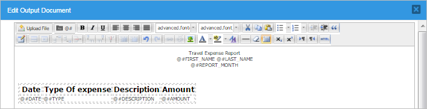
Editing the HTML in the database
The graphical editor in ProcessMaker strips away unrecognized HTML tags, which can cause changes to the formatting of Output Documents. The only way to get around this problem is to edit the HTML code of Output Document in the database. It can be edited by using PhpMyAdmin to enter the wf_WORKSPACE database in MySQL and then use the Output Document's UID to search for the Output Document's template in the CONTENT table. It can be found with the following query:
If using PhpMyAdmin, click on the record's Edit link to edit the Output Document's template:
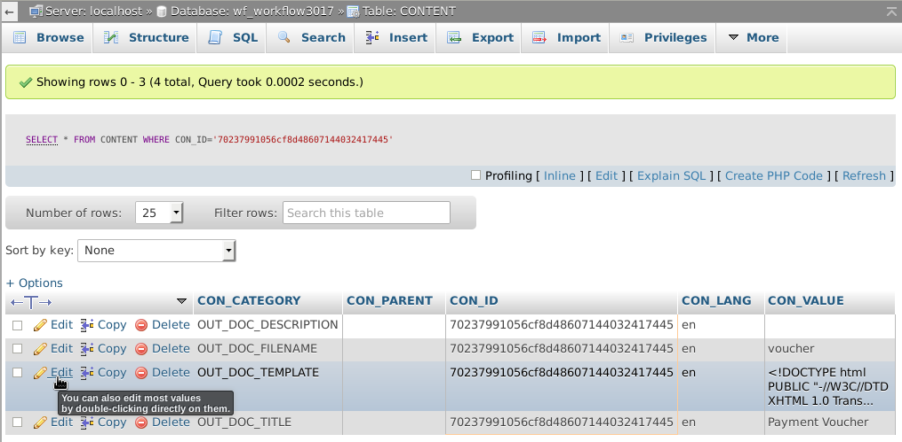Errors with Output Documents
Error while generating PDF Documents
PHP version 5.4.0 or less must be installed if using the HTML2PDF library to generate PDF documents. Otherwise, a blank page will be generated. If a later version of PHP is installed, use the TCPDF library to generate Output Documents.
Variables are not inserted
If variables are not inserted into an Output Document, then either:
- The variable name was not spelled correctly. Remember that system and case variable names are case sensitive. Recheck the spelling by looking at the field name in the DynaForm or the variable name in the Trigger where it was defined.
- The case variable doesn't exist when the Output Document was created. If an Output Document references fields from a DynaForm which is used later in the process, then the case variable doesn't yet exist. Also, remember that case variables for each field in a DynaForm are only created when the DynaForm is submitted. If the user clicks on the Next Step link in a DynaForm whose Next Step Link property is set to "No Save & Continue", then none of the data in the DynaForm will be saved.
In order to determine what is the problem, run a case with the Trigger Debugger turned on and check whether the variables exist and what values they contain.
Output Document is empty
If an Output Document is generated which is empty, then there probably wasn't enough session memory to properly generate the document. Large output documents may need more than 80MB of session memory. Try increasing PHP's memory_limit setting.
Error in html2pdf
ProcessMaker uses html2pdf to generate Output Documents in PDF format. If an error message appears about a class in html2pdf saying "out of memory", then the pcre.backtrack_limit setting probably needs to be increased to allow for bigger style definitions, larger template files and deeper levels of nested tables/divs. pcre.backtrack_limit is a new setting introduced in PHP 5.2.0. If using an older version of PHP, upgrade to a newer version which supports the setting.
Edit php.ini, which is the PHP configuration file on the server running ProcessMaker, and add/modify the following line to increase the backtrack_limit:
Then, restart Apache for the new setting to take effect.
Using Non US-ASCII Characters in Output Documents
If the use of characters inside an Output Document is needed and the generation of this documents needs to be done in HTML2PDF (Old Version) then follow the steps below to be able to open a document with Chinese, Arabic, Japanese and others characters successfully.
- 1. Download this file (it will download automatically depending on your browsers configuration) which allows the use of characters inside an Output Document. The file that has been downloaded must be added into the following route in the ProcessMaker installation: [installation path]/gulliver/thidparty/html2ps_pdf/fonts. Remember to give the folder all the corresponding permissions.
- 2. Create an Output document with the specifications shown in the image below. Notice that
the "Report Generator" field will be in "HTML2PDF". Click on the "Save" button to store the document.
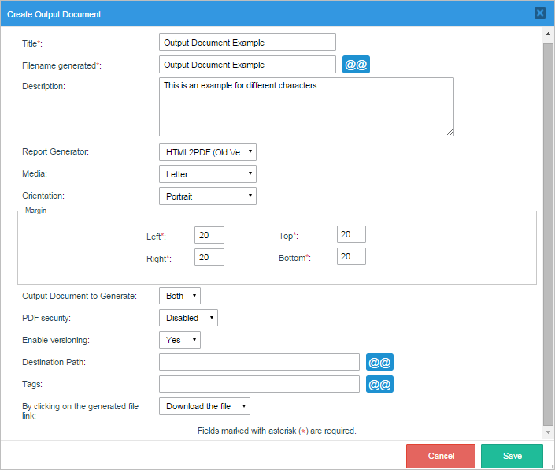
- 3. Once saved, open the editor of the Output Document recently created by clicking on the
"Open Editor" button.

- 4. Add text with Chinese characters such as: "This is an example with Chinese characters 這是一個用漢字的例子".
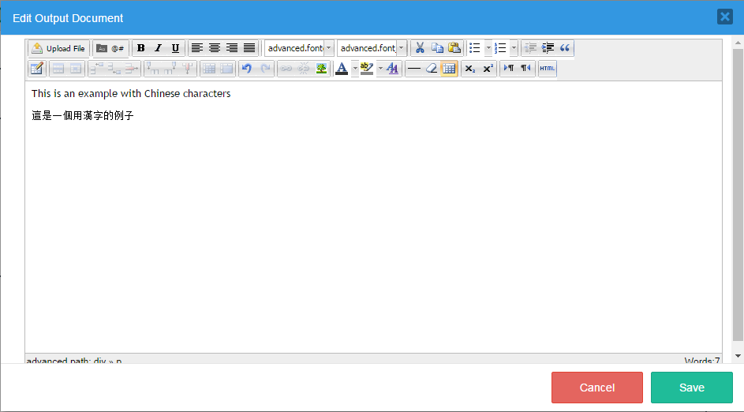
- 5. When a case runs, both .doc and .pdf options will be available. Click on
the link to start the download of the documents.

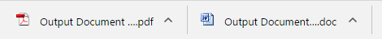
- 6. Notice that when the documents are opened the characters will be displayed correctly in
both .doc and .pdf as seen in the images below.
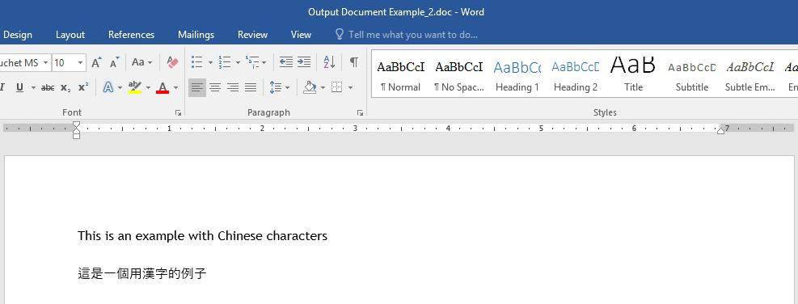
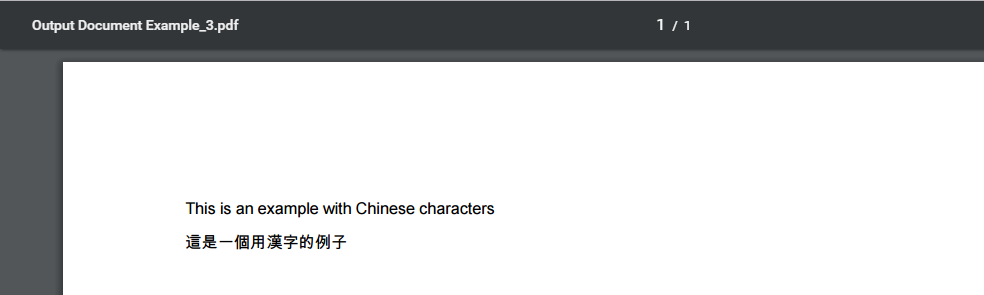
- 7. Other characters can also be added to Output Documents.
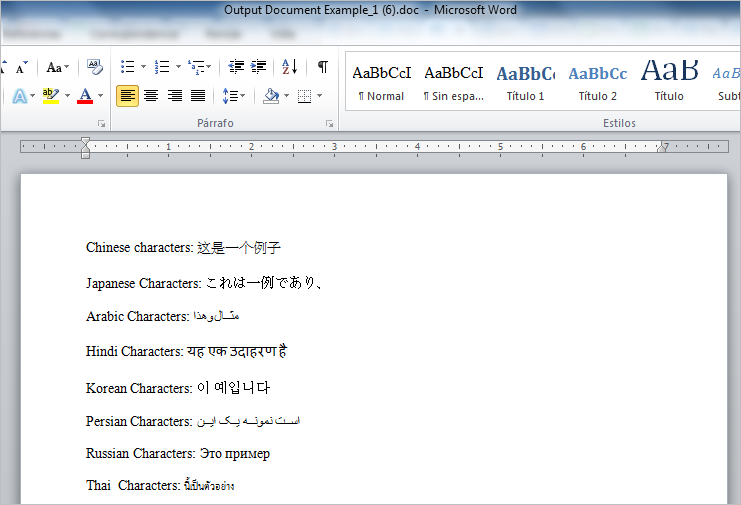
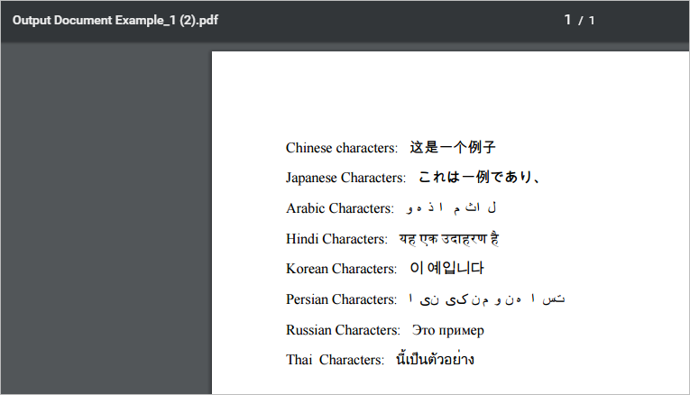
Output Documents in Multiple Languages
There are two ways to create an output document in multiple languages. The first way is to generate the output document's HTML content dynamically in a trigger based on the system language.
For example, the following trigger generates the HTML content dynamically in Spanish and English:
if (@@SYS_LANG == 'es' or @@SYS_LANG == 'es-ES')
{ @@fileContent = "<p><b>Nombre del Cliente:</b> ".@@clientName."</p>\n". "<p><b>Dirección del Cliente:</b> ".@@clientAddress."</p>\n"; }
else
//content in English:
{ @@fileContent = "<p><b>Client Name:</b> ".@@clientName."</p>\n". "<p><b>Client Address:</b> ".@@clientAddress."</p>\n"; }
Set this trigger to fire before the output document step. Then, place @#fileContent in the output document template. When the output document is generated while running a case, the content will automatically be inserted depending on the system language.
The other option is to create a separate output document for each language. Add each output document as steps in the task. Then, add conditions to execute the one output document which corresponds to the current system language and not execute the rest of the output documents.
For example, output document templates are created for both Spanish and English:

Both output documents are added as steps in a task and conditions are added to both to check the current system language.

The following condition executes the Spanish output document:
And the following condition would execute the English output document step if the system language is not Spanish:
Inserting Output Documents into a Process
After creating an output document, decide where in a process the Output Document can be submitted. Remember that a task is a group of steps, so an output document must be added in a task. Read this documentation which explains how to add an Output Document as a step
Output Documents Example
Simple Output Documents Example
To create simple Output Documents, go to Output Documents in the main toolbox and click on "Create". A new window will open in which the information about the document must be filled. After filling in all the information that is necessary, save the output document.
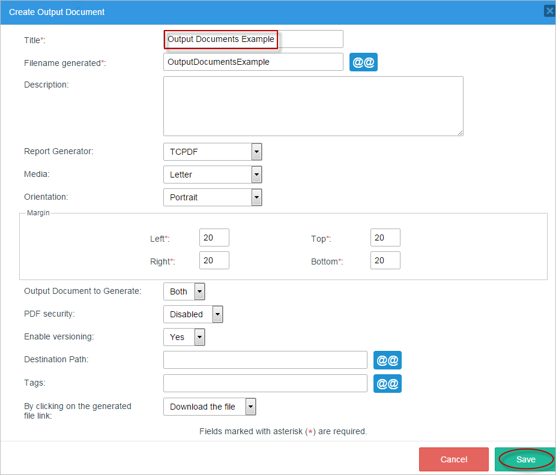
Once saved, the "Output Document Example" will appear in the Output Documents list, click on "Open Editor" to write a document in a Word-like environment. After it is saved, a quick message will appear saying the document has been edited successfully.
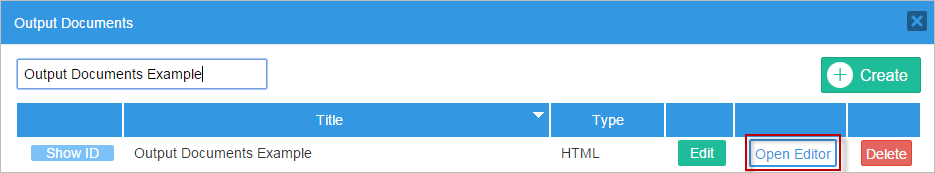
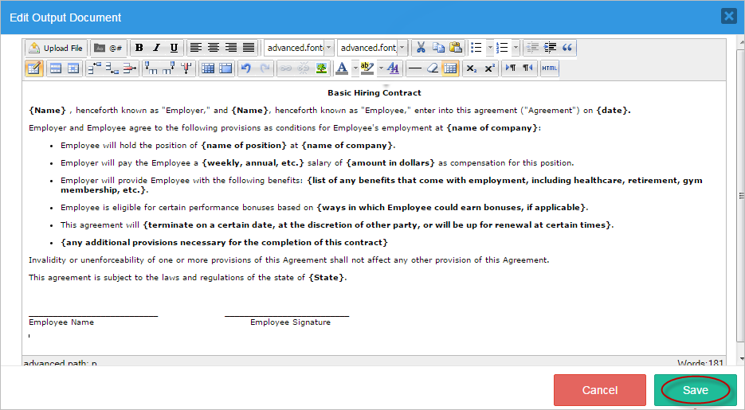
After saving it, go to the first task and right click on it to select "Steps" and drag and drop the "Output Documents Example" to be called after the Dynaform.

Now, to see how an Output Document looks when a case is running, go to "Home" > "New Case" and double click on the process that contains the Output Document. In this case, the process "Copy of Purchase Request" is being used as an example. Once the initial information of the client is filled in, the next step is to see the document. As the image below shows, the document is generated in .doc and .pdf.

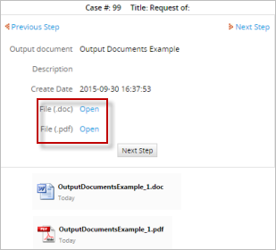
The image below shows how both documents look in both formats .doc and .pdf.

Output Documents Example with HTML
To create an example with HTML, first create four variables "name" type String, "email" type String, "address" type String and "currentDate" type Datetime. These variables will be stored in all the fields of the DynaForm that we will create next.
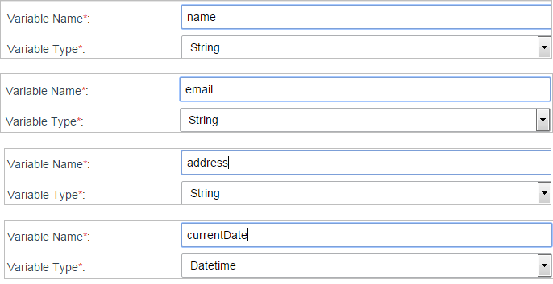
Now, create a Dynaform with fields named as the variables to have congruence between the variable, the Dynaform and the soon to be created Output Document. Don't forget to create a "Submit" button to go into the next task.
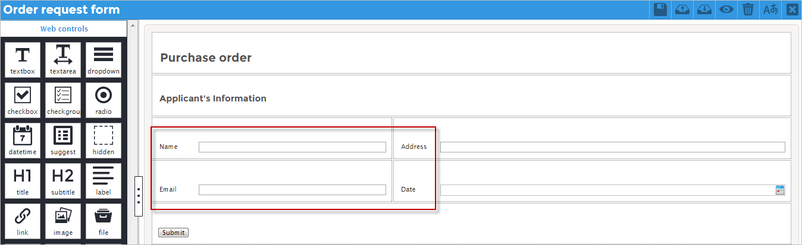
Save the Dynaform "Order request form" to add it as a step to the task will be working on.
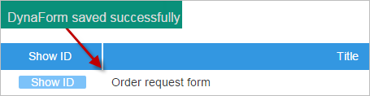
It's time to create an Output Document with the name "Output Documents Example". Locate the button with the "HTML" sign and click on it. It will open an HTML Source Editor where code can be added. Try adding this code for this particular example:
<html>
<head>
</head>
<body>
<p></p>
<div style="font-family: 'Trebuchet MS', Arial, Helvetica, sans-serif; font-size: 13px;">
<p><img src="http://www.processmaker.com/uploads/processmaker_logo_nobg300.png" width="300" height="72" /></p>
<p style="color: #009; font-weight: bold;">NEW YORK<br />Brooklyn, NY, 11238, USA</p>
<p style="text-align: center; text-decoration: underline; font-size: 20px;">PROOF OF PAYMENT</p>
<p>Sent by: @#USR_USERNAME</p>
<p>Name: @#name</p>
<p>Email: @#email</p>
<p>Address: @#address</p>
<p>Current date: @#currentDate</p>
<p>Status: Approved</p>
<p></p>
</div>
</body>
</html>
</body>
</html>
When the code is ready to be executed click on update to save it.
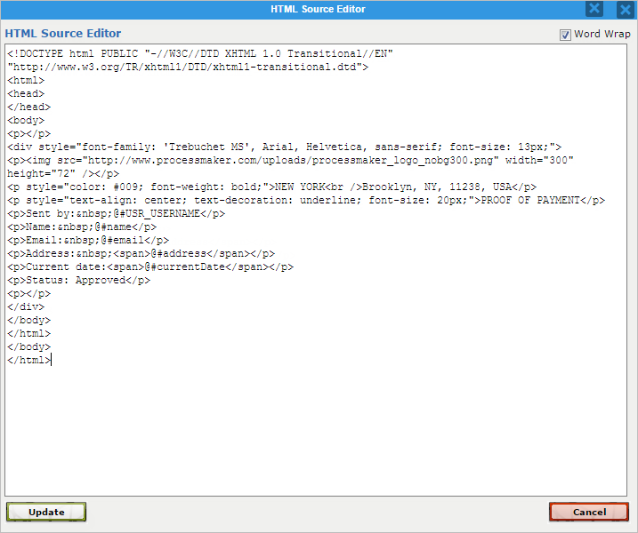
The result of this HTML Code will be:
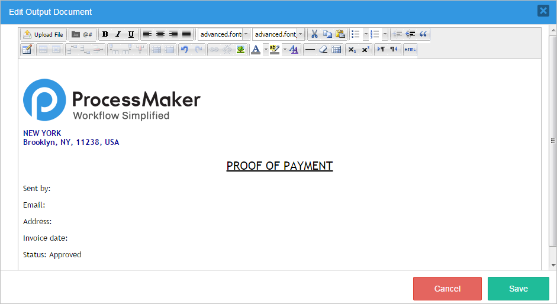
This example was designed to use variables that will show the saved field of a Dynaform and appear automatically in the output Document. For this, go to the variable picker in the edition window of Output Documents, choose the prefix "@#" because it will insert the value of the variable without any changes. Insert the variable that belongs with each field, as seen in the image below.
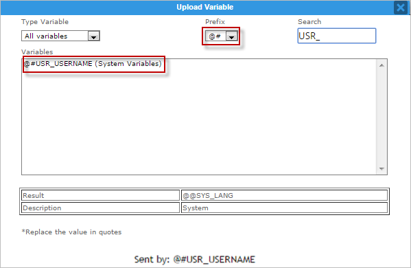
After adding all the variables to each field, the Output Document is ready to be assigned to a task. Then, save it, and it will appear in the list with the other documents.
Choose the first task and right click on it to show its properties, click on "Steps" and add the Output Document after completing the Dynaform, as seen in the image below.
To test if it works, go to "Home" > "New Case" and star the process "Copy of Purchase Request" by double clicking it. Fill the information in the form and click "Submit" to see the Output Document.
The next window will show that there is an Output Document before moving on to the next task, and that there are two files generated in .doc and .pdf.
Once "Open" is clicked for either document, an automatic download of the Output Documents will start and will be saved in the Download folder. Open them to see that the document has the information required in the HTML Code and is calling all the variables added in the Dynaform.
Output Document Storage
Output Document Definitions
The definitions of Output Documents are stored in the wf_<WORKSPACE>.OUTPUT_DOCUMENT table in the MySQL database. This table, however, doesn't contain the title, description, template and filename for Output Documents, because this information can be multilingual with a different version for each language. Instead, this information is stored in the wf_<WORKSPACE>.CONTENT table under different ISO 639-1 language codes, such as "en" for English or "es" for Spanish.
To find the title, description, template and filename for Output Documents, enter MySQL (either from the command line or with a graphical program such as phpMyAdmin) or access it through a function such as executeQuery() in a trigger. Search for a value of 'OUT_DOC_TITLE', 'OUT_DOC_DESCRIPTION', 'OUT_DOC_TEMPLATE', and 'OUT_DOC_FILENAME' in the wf_<WORKSPACE>.OUTPUT_DOCUMENT.CON_CATEGORY field. For example, to find all Output Document templates:
To find a specific Output Document template, specify its unique ID in the query:

Use the following SQL query to see all the entries related to Output Documents:
To see the information about a particular Output Document definition, search for its unique ID, which can either be found in the field wf_<WORKSPACE>.OUTPUT_DOCUMENT.OUT_DOC_UID or by opening the list of Output Documents inside ProcessMaker and clicking the UID link for an Output Document. Once the unique ID is known, it can be used in a SQL query:

For example, here is an Output Document defined in both English and Spanish:
Note that a multilingual Output Document like this can be created by first logging into ProcessMaker in English and creating the Output Document, then logging into ProcessMaker in Spanish and editing the same output document in Spanish.
Output Document Files
When Output Document files are generated while running a case, an HTML file is created based upon the Output Document's template. From that HTML file, a PDF and/or DOC file are created. (Actually the DOC file is really just HTML code inside a DOC container.)
Output Documents files are stored at:
The filename of output documents files includes the unique ID for the case file (which is stored in the wf_<WORKFLOW>.APP_DOCUMENT.APP_DOC_UID field) and the version number, which starts counting from 1. Even if versioning isn't enabled, the filename will include "_1".
Linux/UNIX:
Note: The TCPDF library doesn't generate a separate HTML file.
For example:
Windows:
For example in Windows Vista and later:
In version 2.5.1 and later, an option was added to allow case files to be stored in a series of 3 subdirectories
created from the case's unique ID to avoid the 32K file limits of Linux's ext3 file system. In version 3.0 and later, this option is activated by default. This means that a directory using the case's unique ID, such as /a03459e1cb9824dac456780eca7b5cf6/ in the above example, becomes 3 subdirectories whose names are three characters in the case's unique ID, with the rest of the unique ID placed in the name of another subdirectory:
If accessing an Output Document file from a ProcessMaker trigger or plugin, it is recommended to use the defined constant PATH_DOCUMENT, to set the location of the case files, such as "/opt/processmaker/shared/sites/workflow/files/" on a Linux/UNIX system, and PATH_SEP, which is "/" on Linux/UNIX systems and "\" on Windows systems to separate directories in the file system. The G::getPathFromUID() method may be used in version 2.5.1 or later to break a unique ID number into subdirectories in this way if the system requires it. For example to get an Output Document file with the case-file ID of 6960198894e6927e0a40b14004833875 and the version number 2 in the current case:
$OutDocPath = PATH_DOCUMENT . $g->getPathFromUID(@@APPLICATION) . PATH_SEP . "outdocs" . PATH_SEP . "6960198894e6927e0a40b14004833875_2.pdf";
G::getPathFromUID() exists before calling it.
$g = new G();
$caseIdPath = method_exists(G, "getPathFromUID") ? $g->getPathFromUID($caseId) : $caseId;
$OutDocPath = PATH_DOCUMENT . $caseIdPath . PATH_SEP . "outdocs" . PATH_SEP . "6960198894e6927e0a40b14004833875_2.pdf";
Changing the File Location
If needing to store Input and Output Document files in a different location, such as a NAS, then copy the contents of the files directory to the new location and then edit the source code in workflow/public_html/sysGeneric.php and change the location of PATH_DOCUMENT, which is defined at line 332:
For example, to store files on an NAS mounted drive at /media/nas/processmaker:
Make sure to include the forward slash in Linux/UNIX or the backward slash in Windows at the end of the path.
Generated Output Documents in the Database
When an Output Document is generated when running a case, a new entry is added to the wf_<WORKSPACE>.APP_DOCUMENT table and a new unique ID is assigned to the generated Output Document. In addition, 3 new entries are added to the wf_<WORKSPACE>.CONTENT table whose CON_ID field is set to that unique ID and the CON_CATEGORY fields are set to 'APP_DOC_TITLE','APP_DOC_FILENAME' and 'APP_DOC_COMMENT', respectively.
If inside a trigger or using an external application or script, the unique ID for an Output Document file can be found with the outputDocumentList() web service. Inside a trigger or a DynaForm, the unique IDs for all generated Output Documents can be looked up with the following SQL query:

To find the generated Output Documents for a specified case:
APP_DOC_TYPE='OUTPUT' AND APP_DOC_STATUS='ACTIVE'
To find a specified Output Document for a specified case, which was uploaded by a specified user:
DOC_UID='<INPUT_DOC_UID>' AND USR_UID='<USER_UID>' AND
APP_DOC_TYPE='INPUT' AND APP_DOC_STATUS='ACTIVE'
Output Documents can be marked by tags, which provide an easy way to find related Output Documents under HOME > Documents. The tags are stored in the wf_<WORKSPACE>.APP_DOCUMENT.APP_DOC_TAGS field for each generated Output Document file and multiple tags are separated by commas. To find all generated Output Document files for a case with a specified tag:
APP_DOC_STATUS='ACTIVE' AND APP_DOC_TAGS LIKE '%<TAG>%'
To find all generated Output Documents created between a certain date range:
APP_DOC_CREATE_DATE>='<YYYY-MM-DD HH:MM:SS>' AND APP_DOC_CREATE_DATE<='<YYYY-MM-DD HH:MM:SS>'
To find the unique IDs for all the generated files for a specified Output Document Definition and their filenames used under HOME > Documents (not its real filename in the file system), query the wf_<WORKSPACE>.CONTENT table:
WHERE AD.DOC_UID='<OUT-DOC-DEFINITION-UID>' AND AD.APP_DOC_STATUS='ACTIVE' AND
AD.APP_DOC_UID=C.CON_ID AND C.CON_CATEGORY='APP_DOC_FILENAME' AND C.CON_VALUE<>''
To find the unique IDs for all the generated Output Documents for a specified user and their filenames used under HOME > Documents:
WHERE AD.USR_UID='<USER-UID>' AND AD.APP_DOC_TYPE='OUTPUT' AND AD.APP_DOC_STATUS='ACTIVE' AND
AD.APP_DOC_UID=C.CON_ID AND C.CON_CATEGORY='APP_DOC_FILENAME' AND C.CON_VALUE=''
To find the unique IDs for all the generated Output Documents for a specified case and their filenames used under HOME > Documents:
WHERE AD.APP_UID='<CASE-UID>' AND AD.APP_DOC_TYPE='OUTPUT' AND AD.APP_DOC_STATUS='ACTIVE' AND
AD.APP_DOC_UID=C.CON_ID AND C.CON_CATEGORY='APP_DOC_FILENAME' AND C.CON_VALUE<>''
If multi-lingual processes have been designed and the filename depends upon the system language, then add ADD C.CON_LANG='<LANG-CODE>' to the 3 queries above.
If the Output Document is configured to allow multiple versions of the same Input Document file, then also look for the record with the highest positive integer in the wf_<WORKSPACE>.APP_DOCUMENT.DOC_VERSION field. (The counting starts from the number 1.)
To find the most recent version of a generated Output Document for a specified case:
DOC_UID='<OUT-DOC-DEFINITION-UID>' AND APP_DOC_STATUS='ACTIVE' AND
DOC_VERSION = (SELECT MAX(DOC_VERSION) FROM APP_DOCUMENT WHERE APP_UID='<CASE-UID>' AND
DOC_UID='<OUT-DOC-DEFINITION-UID>' AND APP_DOC_STATUS='ACTIVE')
Accessing Output Document with Triggers
Links to Output Documents in DynaForms
Trigger code can be used to look up information about an Output Document file in the database and construct the address to download the file.
First, add two link controls to a DynaForm for the PDF and DOC of an Output Document file:

In the properties of the link to the PDF file, set its display text property to the @@filenamePdf variable and set its href property to the @@filePdfUrl variable. Likewise, in the properties of the DOC file, set its display text property to the @@filenameDoc variable and set its href property to the @@fileDocUrl variable.
Then, create the following trigger which looks up information about the latest version of the Output Document file in the APP_DOCUMENT table and its filename in the CONTENT table in the database:
$docId = '30671206456bbc811c7dd13078044406';
$caseId = @@APPLICATION;
$query = "SELECT AD.APP_DOC_UID AS FILE_ID, C.CON_VALUE AS FILENAME, AD.DOC_VERSION AS VERSION
FROM APP_DOCUMENT AD, CONTENT C
WHERE AD.APP_UID='$caseId' AND AD.DOC_UID='$docId' AND AD.APP_DOC_UID=C.CON_ID AND
C.CON_CATEGORY='APP_DOC_FILENAME' AND AD.DOC_VERSION=C.CON_PARENT
ORDER BY AD.DOC_VERSION DESC";
$result = executeQuery($query);
if (!is_array($result) or count($result) == 0) {
die("Error: Unable to find Output Document file for case $caseId.");
}
$fileId = $result[1]['FILE_ID'];
$filename = $result[1]['FILENAME'];
$version = $result[1]['VERSION'];
@@filePdfUrl = "http://{$_SERVER['SERVER_NAME']}:{$_SERVER['SERVER_PORT']}/sys" . @@SYS_SYS .
"/neoclassic/en/cases/cases_ShowOutputDocument?a=$fileId&v=$version&ext=pdf";
@@fileDocUrl = "http://{$_SERVER['SERVER_NAME']}:{$_SERVER['SERVER_PORT']}/sys" . @@SYS_SYS .
"/neoclassic/en/cases/cases_ShowOutputDocument?a=$fileId&v=$version&ext=doc";
@@filenamePdf = "{$filename}_{$version}.pdf";
@@filenameDoc = "{$filename}_{$version}.doc";
This trigger code sets the values of the variables which are inserted into the properties of the link controls when the DynaForm is generated. Make sure to change the $docId to the unique ID of the Output Document. Then, set this trigger to fire before the DynaForm.
When a case is run, the filenames and the URLs of the PDF and DOC files should be automatically inserted in the links in the DynaForm.
Generating Output Documents
The PMFGenerateOutputDocument() function can be called in a trigger to generate an Output Document in the current case. The PMFGenerateOutputDocument() function doesn't return any information about the generated file, but afterwards the executeQuery() function can be used to lookup this information in the wf_WORKSPACE.APP_DOCUMENT table. Information such as the filename, file version, the user who generated the file, and datetime when generated can be obtained with a complex database query as shown in the previous example, but it is much simpler to use the AppDocument::Load() method to obtain this information.
Example:
This example (which can be downloaded by right clicking this link and saving it) shows how to generate an Output Document and display a link to the generated file in a subsequent DynaForm, so that it is not necessary to have a separate Output Document step.
First, create two string variables named outDocUrl and outDocFilename, which will be used to pass the web address and filename of the generated file to the DynaForm. Then create a DynaForm which has a link control. In the properties of that link control, set the display text property to @@outDocFilename and the href property to @@outDocUrl.

Then, create an Output Document and get its Unique ID number by clicking on its Show ID button:
Then, create a trigger with the following code which generates the Output Document and looks up information about the generated PDF file:
$outDocId = '84581368556d0b69010a355067195050';
$caseId = @@APPLICATION;
PMFGenerateOutputDocument($outDocId);
//retrieve info from the database about the generated output document file
$query = "SELECT APP_DOC_UID FROM APP_DOCUMENT WHERE APP_UID='$caseId' AND
DOC_UID='$outDocId' AND APP_DOC_STATUS='ACTIVE'";
$result = executeQuery($query);
if (!is_array($result) or count($result) == 0) {
die("Error: Unable to find generated Output Document in database.");
}
$d = new AppDocument();
$aFile = $d->Load( $result[1]['APP_DOC_UID'] );
//change from 'http://' to 'https://' if using SSL
//change 'pdf' to 'doc' for MS Word file
@@outDocUrl = 'http://' . $_SERVER['SERVER_NAME'] .
// ':' . $_SERVER['SERVER_PORT'] . //uncomment if needing a port number
'/sys'. @@SYS_SYS . '/en/neoclassic/cases/cases_ShowOutputDocument?a=' .
$aFile['APP_DOC_UID'] . '&v='. $aFile['DOC_VERSION'] . '&ext=pdf';
@@outDocFilename = $aFile['APP_DOC_FILENAME'] .'_'. $aFile['DOC_VERSION'] .'.pdf';
$outDocId variable to the Output Document's unique ID. The address in @@outDocUrl also may need to be adjusted if using https or if using a port number. In this example, the link is
for a PDF file, but change from 'pdf' to 'doc' if linking to an MS Word file.
Set the above trigger to fire before the
DynaForm.
When a case is run, the filename for the generated Output Document file should be displayed in the link field.
Convert Output Documents to Text Files
The following example shows how to convert an Output Document file into a text file and display it in a Link control in a subsequent DynaForm so the user can download the text file.
In this example, the pdftotext command from Poppler is used to convert an Output Document's PDF file into a text file. Poppler has to be installed separately on the ProcessMaker server. On most Linux/UNIX servers, it is available to be installed in the poppler-utils package. For Windows machines, Poppler can be downloaded here. If not wishing to install a separate program, it is also possible to convert the Output Document's HTML file into text with the strip_tags() function, so this example can be modified to work without Poppler.
First, create an Output Document in the process and get its ID number, which in this example is "233815488585c62af61e2a6077136729".
Then, create a DynaForm with a Link control. In the properties of the Link, set the display text to @@textDocFilename and the href to @@textDocUrl.

Finally, create the following trigger:
$outDocId = '233815488585c62af61e2a6077136729';
PMFGenerateOutputDocument($outDocId);
//retrieve info from the database about the generated output document file
$caseId = @@APPLICATION;
$query = "SELECT APP_DOC_UID, DOC_VERSION FROM APP_DOCUMENT
WHERE APP_UID='$caseId' AND DOC_UID='$outDocId' AND
APP_DOC_STATUS='ACTIVE' ORDER BY APP_DOC_CREATE_DATE DESC";
$result = executeQuery($query);
if (!is_array($result) or count($result) == 0) {
die("Error: Unable to find generated Output Document in database.");
}
//get the filename of the uploaded document:
$d = new AppDocument();
$aFile = $d->Load($result[1]['APP_DOC_UID'], $result[1]['DOC_VERSION']);
$originalFilename = $aFile['APP_DOC_FILENAME'].'_'.$aFile['DOC_VERSION'];
$filename = $result[1]['APP_DOC_UID'].'_'.$result[1]['DOC_VERSION'];
$g = new G();
$path = PATH_DOCUMENT. $g->getPathFromUID($caseId) .PATH_SEP. "outdocs" .PATH_SEP. $filename .'.pdf';
$tempFile = tempnam(sys_get_temp_dir(), $originalFilename.'_');
//convert PDF to text file:
exec("pdftotext $path $tempFile.txt", @=aOutput);
//upload temporary text file to current case
$params = array (
'ATTACH_FILE' => new CurlFile($tempFile.'.txt'),
'APPLICATION' => @@APPLICATION,
'INDEX' => @%INDEX,
'USR_UID' => @@USER_LOGGED,
'DOC_UID' => '-1',
'APP_DOC_TYPE' => 'ATTACHED',
'TITLE' => '',
'COMMENT' => ''
);
$domain = ($g->is_https() ? 'https://' : 'http://') . $_SERVER['SERVER_NAME'];
//add if needing a port number: .':'. $_SERVER['SERVER_PORT']
$uploadUrl = $domain.'/sys'.SYS_SYS.'/'.SYS_LANG.'/'.SYS_SKIN.'/services/upload';
//upload text file created from output document
ob_flush();
$ch = curl_init();
curl_setopt($ch, CURLOPT_URL, $uploadUrl);
curl_setopt($ch, CURLOPT_RETURNTRANSFER, 1);
curl_setopt($ch, CURLOPT_POST, 1);
curl_setopt($ch, CURLOPT_POSTFIELDS, $params);
// curl_setopt ($ch, CURLOPT_SSL_VERIFYHOST, 1); //Uncomment for SSL
// curl_setopt ($ch, CURLOPT_SSL_VERIFYPEER, 1); //Uncomment for SSL
$response = curl_exec($ch);
curl_close($ch);
//delete temporary text files:
unlink($tempFile);
unlink($tempFile.'.txt');
if (strpos($response, 'uploaded successfully') === false) {
die($response);
}
//lookup uploaded text file in the database:
$query = "SELECT APP_DOC_UID, DOC_VERSION FROM APP_DOCUMENT
WHERE APP_UID='$caseId' AND DOC_UID='-1' AND APP_DOC_STATUS='ACTIVE'
ORDER BY APP_DOC_CREATE_DATE DESC";
$result = executeQuery($query);
@@textDocUrl = $domain.'/sys'.SYS_SYS.'/'.SYS_LANG.'/'.SYS_SKIN.
'/cases/cases_ShowDocument?a='. $result[1]['APP_DOC_UID'] .
'&v='. $result[1]['DOC_VERSION'];
@@textDocFilename = basename($tempFile.'.txt');
Change the ID number of the Output Document to match your process. Set this trigger to execute before the DynaForm.
This trigger first uses PMFGenerateOutputDocument() to create the Output Document files. Then, it searches in the APP_DOCUMENT table in the database for the newly generated file in order to get its unique ID and version number. With that information, it calls the AppDocument::Load() method in order to get the filename of the generated file and construct the path where the file is stored on the ProcessMaker server.
The trigger then uses the tempnam() function to create a temporary file on the ProcessMaker server which will hold the text file. Then, it uses the exec() function to make a system call for the pdftotext program to convert the Output Document's PDF file into a text file.
The temporary text file is then uploaded to /services/upload as a new document in the case. The APP_DOCUMENT table is queried again to find the ID number and version number of this new document file. The URL to download the text file is placed in the @@textDocUrl variable and the filename of the text file is placed in the @@textDocFilename variable.
When a case is run and the DynaForm with the Link field is displayed, the user can click on the link to download the text file.
For a sample process containing this code, download and install output_document_to_text_file-3.pmx (right click and select "Save Link As").